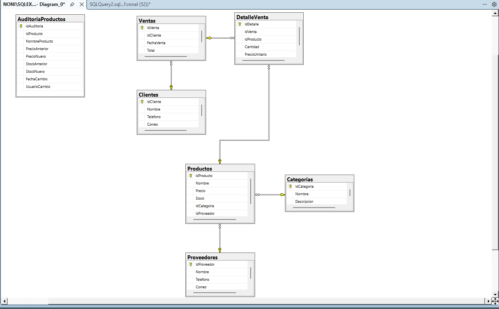

Proyecto académico desarrollado con SQL Server
Este proyecto consiste en el desarrollo de un sistema de inventario y ventas utilizando SQL Server. Fue creado como parte de mi formación en Ingeniería de Software y tiene como objetivo gestionar información relacionada con productos, categorías, proveedores, clientes y ventas.
En esta captura se muestra la estructura principal de las tablas utilizadas en el sistema de inventario y ventas.

Este proyecto forma parte de mi experiencia académica y práctica trabajando con bases de datos. Me permitió aplicar conocimientos de SQL Server y comprender mejor cómo estructurar, consultar y administrar la información de un sistema.
Por motivos de seguridad y protección del proyecto académico, el código fuente completo no se encuentra publicado.
← Volver al portafolio